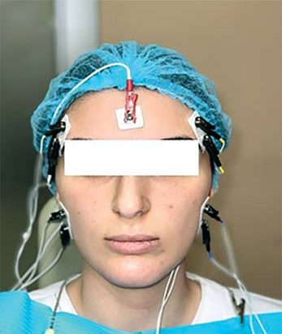
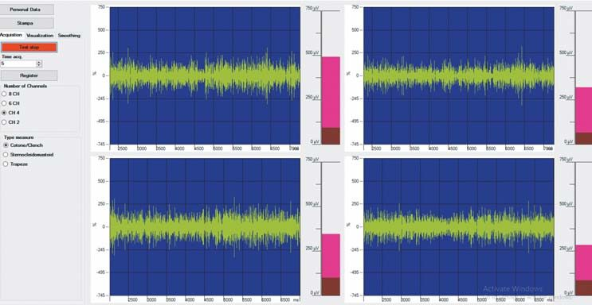
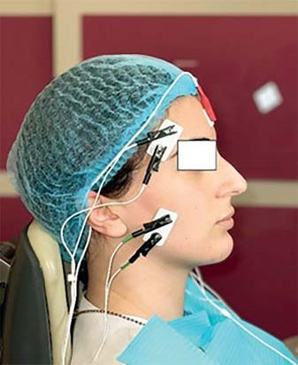
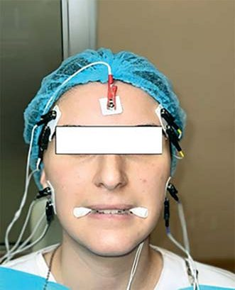

Наука · журнал «ДентАрт» 2022 №4
Електроміографічні характеристики жувальних м'язів у режимах носового та орального дихання за максимального скорочення
Electromyographic features of masseter in nasal and oral breathing modes during maximum contractility
Тип дихання (носовий, оральний, ороназальний) може виявитися причинним фактором (або результатом) ортодонтичних аномалій поряд із респіраторно-метаболічними порушеннями. Отже, оцінка функціональних характеристик жувального апарату, що різняться за орального і носового режимів дихання, може становити інтерес для визначення ступеня ортодонтичної дисфункції та формування ефективного індивідуалізованого плану лікування.
Метою дослідження була оцінка електрофізіологічних характеристик жувальних м'язів у режимах носового і ротового дихання. Показники ступеня середньої скоротливості м'язів, зареєстровані в результаті стандартизованого максимального добровільного скорочення, свідчать, що під час носового дихання м'язова активність однорідна та симетрична в правому і лівому жувальному та скроневому м'язах. І навпаки, при оральному диханні ці показники дисоційовані. Електрофізіологічна активність і, відповідно, скоротливість м'язів знижується.
Суть профілактики, ранньої діагностики, а не хірургічної корекції щелепно-лицьових патологій полягає в усуненні первинних та/або вже розвинених вторинних змін верхньої і нижньої щелеп, оклюзії та порожнини носа, що одночасно сприяє адекватнішому лікуванню патологій носоглотки. Деякі методи лікування звуженої, V-подібної верхньої щелепи дають змогу розширити носову порожнину (навіть на її кістковому рівні!) разом із нормалізацією зубної дуги – проблема, яку не можна розв'язати консервативним лікуванням. У результаті пацієнтові надають комплексну допомогу, спрямовану на усунення запалення чи іншої проблеми в носоглотковій системі або корекцію зубощелепних аномалій, що вже розвинулися, і це дає змогу нормалізувати ріст щелеп, формування обличчя та оклюзію.1
Останнім часом зростає інтерес дослідників і лікарів до значення цілої низки чинників, що впливають на розвиток кісткової структури обличчя, його поперечний ріст і формування функціонально правильної оклюзії, з основним акцентом на жувальні м'язи, а саме жувальні та скроневі м'язи, і не лише на їхню координовану активність, а й на такі фізіологічні характеристики, як скоротливість і, відповідно, збудливість. Хоча слід зазначити, що дані про вплив віку та статі на електроміографічні показники цього апарату в літературі поодинокі. Дослідники встановили, що стомлюваність жувальних м'язів вища у жінок, ніж у чоловіків.
Дихання, а саме носове дихання, крім своїх класичних фізіологічних функцій, бере безпосередню функціональну участь у формуванні лицьових, ротових, жувальних м'язів, лицьових кісток і їхньої фізіологічної активності.
Дихання й ортодонтичні аномалії
Нижче ми сформулюємо основні фактори, що прямо і/або побічно пов'язані з режимами назального й орального дихання, які можуть мати короткостроковий або довгостроковий причинний вплив на різні ортодонтичні аномалії.
- Нормальний дихальний патерн складається з 10-12 циклів вдиху і видиху. При оральному диханні ця кількість збільшується до 12-20 циклів.2
- Носове дихання визначає тонус судин головного мозку, внутрішньочерепний і внутрішньоочний тиск. Оральне дихання порушує цей важливий фізіологічний механізм регуляції мозкового кровотоку.
- Оскільки носове дихання визначає ритмічні зміни тиску спинномозкової рідини, воно також є важливим механізмом її переміщення.
- Під час носового дихання язик «лежить» на піднебінні, не торкаючись зубів, і в такому положенні розвивається пасивний тиск, що стимулює стовбурові клітини в піднебінному шві та періодонтальній зв'язці й визначає нормальний ріст зубної дуги, тобто зуби прорізуються по колу язика, тим самим формуючи здорову форму зубної дуги. Колатеральний тиск язика компенсується букцинаторними м'язами. Під час орального дихання язик, відірваний від піднебіння, стає одним зі збудників звуження зубної дуги під впливом букцинаторів.
- Деякі симптоми, такі як частково відкрите положення губ, неправильне положення язика, гіперфункція підборідного м'яза (mentalis) під час торкання губ, змінена оклюзія і тверде піднебіння, є визначальними характеристиками ротового дихання (Marta Assumpзгo de Andrada e Silva і співавт., 2012). У таких випадках язик зміщується вниз і вперед, тим самим спричиняючи стиснення букцинаторів і руйнування верхньої зубної дуги. У таких пацієнтів вузька, недорозвинена верхня щелепа і часто, можна сказати, довге обличчя. Цей комплекс відомий як «синдром довгого обличчя».
- Аномалії росту кісток, тобто зміни в рості верхньої та нижньої щелеп, спричинені ротовим диханням, згодом можуть призвести до обструктивного апное сну. Обертання верхньощелепного комплексу за годинниковою стрілкою може навіть призвести до звуження дихальних шляхів і серйозних проблем зі сном.
Отже, тип дихання може виявитися причинним фактором (або результатом) ортодонтичних аномалій поряд із респіраторно-метаболічними порушеннями. Відтак оцінка функціональних характеристик жувального апарату, що розрізняються у двох режимах дихання, може становити інтерес для визначення ступеня ортодонтичної дисфункції та формування ефективного індивідуалізованого плану лікування.
Електроміографія жувальних м'язів – це якісний і кількісний метод оцінки, що застосовується для стоматологічних, зокрема ортодонтичних пацієнтів. Поверхневе розташування скроневих і жувальних м'язів робить їх більш вимірюваними за допомогою електроміографії, тому вони частіше за інші м'язи, що беруть участь у піднятті нижньої щелепи, піддаються клінічному обстеженню. Електроміографія жувальних м'язів – це простий, недорогий і неінвазивний тест, що не спричиняє дискомфорту в обстежуваного і не супроводжується побічними ефектами. Хоча певні чинники, такі як інструментальний шум, товщина підшкірної жирової тканини, перехресні перешкоди від сусідніх м'язів тощо, безумовно, є. Незважаючи на це, електроміографія черепно-лицьової ділянки, зокрема жувальних м'язів, як і раніше, є ефективним інструментом для об'єктивної оцінки функціонального стану жувального апарату і функціональних аспектів оклюзії.
Метою дослідження була оцінка електрофізіологічних характеристик жувальних м'язів (правого і лівого скроневих, правого і лівого жувальних м'язів) у режимах носового і ротового дихання.
Матеріал і методи дослідження
Дослідження проводилося на вибірці із 40 жінок-добровольців віком 18-40 років. Конфлікт інтересів було виключено. Дослідження проводилося в рамках популяційного дослідження.
Усі випробовувані мали постійний прикус з усіма другими молярами; загалом мінімум 28 природних зубів. Ні в кого з них не було клінічних проявів соматичних, неврологічних або ендокринних захворювань, а також захворювань порожнини носа, навколоносових пазух чи тонзилярної системи. Від усіх випробовуваних було отримано письмову інформовану згоду. Щоб звузити відбір суб'єктів, придатних для дослідження, ми застосували електроміографічний протокол нормалізованого електроміографічного запису під час максимального добровільного скорочення стискання зубів на валиках.
Піддослідні мали різні типи дихання (носове, оральне, змішане ороназальне), хоча аналіз результатів цього дослідження ґрунтується на даних, зібраних в учасників із носовим і оральним типами дихання, тобто у 32 добровольців із загальної вибірки в 40 осіб.
Електрофізіологічне дослідження правого і лівого жувальних і скроневих м'язів робили за допомогою апарата Easymyo (Італія). Срібні/срібно-хлоридні біполярні електроди для дослідження жувальних м'язів поміщали на зовнішні поверхні щік на відповідному боці під час максимального добровільного скорочення над виступом, який легше за все пальпувати, паралельно м'язовим волокнам.5 Контрольний електрод був поміщений на лоб. Перед розміщенням електродів ділянку шкіри було очищено розчином на основі спирту. Біполярні електроди розташовувалися на відстані 22 мм один від одного.
Електроміографічну активність реєстрували за допомогою чотирьох каналів восьмиканального електроміографа (Easymyo). Сигнал піддавався цифровій фільтрації та усереднювався за 3000 мс. Електричну активність правого і лівого жувальних і скроневих м'язів вимірювали у мікровольтах (мкВ) із використанням середнього значення для кожного м'яза.
Електроміографічні потенціали були стандартизовані за Ферраріо.4-6 Два ватні валики завтовшки 10 мм розташовувалися між другим премоляром і першим моляром нижньої щелепи. Електроміограму максимального вольового скорочення під час стискання зубів записували протягом 3 с, що давало змогу блокувати дентоальвеолярну пропріоцепцію і визначити ступінь м'язової скоротливості. Випробовуваних просили повторити ту саму дію, використовуючи власну оклюзію, де оклюзійні контакти непрямо впливали на м'язовий тонус. Ми прийняли перший тест за стандарт (100%), де стан м'язів не залежить від впливу інших чинників, включно із зубами.
Результати та їх обговорення
У таблиці наведено показники електрофізіологічних характеристик жувальних м'язів: правого і лівого скроневих м'язів, правого і лівого жувальних м'язів, виражені в мкВ, P<0,001.
| Тип дихання | Правий скроневий м'яз | Лівий скроневий м'яз | Правий жувальний м'яз | Лівий жувальний м'яз |
|---|---|---|---|---|
| Назальне | 189,8 ± 4,3 | 187,4 ± 4,0 | 183,1 ± 3,3 | 185,5 ± 3,9 |
| Оральне | 110,7 ± 3,3 | 124,5 ± 2,3 | 69,8 ± 2,2 | 75,5 ± 2,0 |
У випробовуваних із носовим диханням електроміографічні потенціали перебувають у межах стандартизованого діапазону. У групі випробовуваних із ротовим диханням стандартизована активність жувальних і скроневих м'язів має нерівномірний характер. Вона різниться з двох боків (асиметрія) і в двох парах м'язів. Асиметрія (сторони) і нерівномірність (пари м'язів) за нормалізованої м'язової активності можуть бути результатом функціонально нестабільної оклюзії, коли під час стискання зубів на ватному валику виникає слабкий пропріоцептивний сигнал, що змушує пацієнта стискати зуби ще сильніше і збільшувати активність жувальних м'язів. Таким чином, змінена оклюзія може викликати аномальну м'язову активність.7
Показники ступеня середньої скоротливості м'язів, зареєстровані в результаті стандартизованого максимального добровільного скорочення, засвідчують, що під час носового дихання м'язова активність однорідна і симетрична в правому і лівому жувальних та скроневих м'язах. І навпаки, за ротового дихання показники дисоційовані, електрофізіологічна активність і, відповідно, скоротливість м'язів знижені, що зумовлено залученням дедалі меншої кількості менш збудливих рухових одиниць.
Результати, отримані під час дослідження, дають змогу припустити, що дані про стан нервово-м'язового балансу жувального апарату можна використати для оцінювання ступеня ортодонтичної дисфункції та розробки індивідуального плану лікування.
Дослідження триває.




Електроміограми жувальних і скроневих м'язів (апарат Easymyo, 4 канали) за максимального добровільного скорочення в режимах носового та орального дихання.
Література
- Bolzan G. P., Souza J. A., Boton L. M., Silva A. T. M., Correa E. C. R. Facial type and head posture of nasal and mouth-breathing children. J Soc Bras Fonoaudiol. 2011; 23(4): 315–320.
- Botelho A. L., Gentil F. H., Sforza C., da Silva M. A. Standardization of the electromyographic signal through the maximum isometric voluntary contraction. Cranio. 2011 Jan; 29(1): 23–31.
- Ribeiro E. C., Marchiori S. C., da Silva A. M. T. Electromyographic muscle EMG activity in mouth and nasal breathing children. Cranio. 2004; 22(2): 145–150.
- Ferrario V. F., Miani A., Sforza C., D'Addona A. Electromyographic activity of human masticatory muscles in normal young people. Statistical evaluation of reference values for clinical application. J Oral Rehabil. 1993 May; 20(3): 271–280.
- Ferrario V. F., Sforza C., Zanotti G., Tartaglia G. M. Maximal bite forces in healthy young adults as predicted by surface electromyography. J Dent. 2004 Aug; 32(6): 451–457.
- Ferrario V. F., Sforza C., Serrao G., Dellavia C., Tartaglia G. M. Single tooth bite forces in healthy young adults. J Oral Rehabil. 2004; 31(1): 18–22.
- Ferrario V. F., Sforza C., Serrao G., Tartaglia G., Dellavia C. Immediate Effect of a Stabilization Splint on Masticatory Muscle Activity in Temporomandibular Disorder Patients. J Oral Rehabil. 2002; 29: 810–815.
- Fuentes A. D., Sforza C., Miralles R., Ferreira C. L., Mapelli A., Lodetti G., Martin C. Assessment of electromyographic activity in patients with temporomandibular disorders and natural mediotrusive occlusal contact during chewing and tooth grinding. Cranio. 2017; 35(3).
- Jefferson Y. Mouth breathing: adverse effects of facial growth, health, academics and behavior. Gen Dent. 2010; 58(1): 18–25.
- Junqueira P., Marchesan I. Q., de Oliveira L. R., Ciccone E., Haddad L., Rizzo M. C. Speech-language pathology findings in patients with mouth breathing: multidisciplinary diagnosis according to etiology. Int J Orofacial Myology. 2010; 36: 27–32.
- Lodetti G., Mapelli A., Musto F., Rosati R., Sforza C. EMG spectral characteristics of masticatory muscles and upper trapezius during maximum voluntary teeth clenching. J Electromyogr Kinesiol. 2012 Feb; 22(1): 103–109.
- Mapelli A., Tartaglia G. M., Connelly S. T., Ferrario V. F., De Felicio C. M., Sforza C. Normalizing surface electromyographic measures of the masticatory muscles: Comparison of two different methods for clinical purpose. J Electromyogr Kinesiol. 2016; 30: 238–242.
- Malhotra S., Pandey R. K., Nagar A., Agarwal S. P., Gupta V. K. The effect of mouth breathing on dentofacial morphology of growing child. J Indian Soc Pedod Prev Dent. 2012; 30(1): 27–31.
- Pacheco M. C. T., Casagrande C. F., Teixeira L. P., Finck N. S., de Araujo M. T. M. Guidelines proposal for clinical recognition of mouth breathing children. Dental Press J Orthod. 2015 Jul-Aug; 20(4).
- de Andrada e Silva M. A., Marchesan I. Q., Ferreira L. P., Schmidt R., Ramires R. R. Posture, lips and tongue tone and mobility of mouth breathing children. Rev CEFAC. 2012; 14(5): 853–860.
- Ikenaga N., Yamaguchi K., Daimon S. Effect of mouth breathing on masticatory muscle activity during chewing food. J Oral Rehabil. 2013 Jun; 40(6): 429–435.
- Ries L. G., Alves M. C., Berzin F. Asymmetric activation of temporalis, masseter, and sternocleidomastoid muscles in temporomandibular disorder patients. Cranio. 2008 Jan; 26(1): 59–64.
- Serrao G., Sforza C., Dellavia C., Antinori M., Ferrario V. F. Relation between vertical facial morphology and jaw muscle activity in healthy young men. Prog Orthod. 2003; 4: 45–51.
- Tartaglia G. M., Testori T., Pallavera A., Marelli B., Sforza C. Electromyographic analysis of masticatory and neck muscles in subjects with natural dentition, teeth-supported and implant-supported prostheses. Clin Oral Implants Res. 2008 Oct; 19(10): 1081–1088.